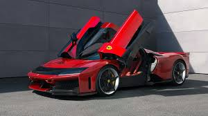

Ferrari is an iconic Italian luxury sports car manufacturer known for producing high-performance vehicles.
History
Founded:
Ferrari was founded in 1939 by Enzo Ferrari in Modena, Italy. Originally, Ferrari was involved in
racing and started as Auto Avio Costruzioni Ferrari.
First Car:
Ferrari's first production car, the 125 S, was introduced in 1947. It had a V12 engine and
marked the brand’s official entry into road car manufacturing.
Racing Legacy:
Ferrari is also renowned for its history in motorsports, especially Formula 1. The Ferrari
F1 team has been the most successful team in the sport's history, with multiple drivers’ and constructors’
championships.
Cars
Ferrari is synonymous with high-performance cars, including supercars, sports cars, and luxury vehicles. Some of the
most famous models include:
Ferrari 250 GTO: One of the most valuable classic cars.
Ferrari F40: A legendary 1980s supercar known for its speed.
Ferrari LaFerrari: A hybrid hypercar, launched in 2013.
Ferrari 488 GTB and Ferrari F8 Tributo: Modern supercars with exceptional speed and design.
Design & Innovation
Ferrari is known for its unique design language—characterized by sleek curves, aggressive lines, and an unmistakable
sporty aesthetic.
Ferrari has also been a leader in automotive innovation, with its use of lightweight materials like carbon
fiber,advanced aerodynamics, and cutting-edge engine technology.
Racing
Ferrari has a rich heritage in Formula 1, having competed in the sport since 1950. The team, Scuderia Ferrari, is
the oldest and most successful team in F1, with 16 Constructors' Championships and 15 Drivers'
Championships.
Notable Ferrari drivers include Michael Schumacher, who won five consecutive world championships for the team, and
Sebastian Vettel.
Ownership & Financials
Ferrari was owned by Fiat Chrysler Automobiles (FCA) for many years. In 2015, Ferrari became an independent publicly
traded company, listed on the New York Stock Exchange and the Borsa Italiana (Milan Stock Exchange).
The Ferrari logo features a prancing horse, which was originally the emblem of Italian fighter pilot Francesco
Baracca.Ferrari adopted it in the 1920s, adding the yellow background from Modena's city colors.
Exclusivity and Price
Ferrari is renowned for its limited production. They produce fewer cars annually than mass-market
manufacturers,maintaining an air of exclusivity.
The prices of Ferrari cars are generally high, ranging from $200,000 to several million dollars for limited edition
or classic models.
Brand Philosophy
"Ferrari is a dream, a passion." The brand’s philosophy emphasizes the idea of creating a unique experience for its
customers, both in driving performance and ownership.
Ferrari in Popular Culture

Ferrari's vehicles are often featured in movies, music videos, and other forms of popular culture. Its cars are a
symbol of wealth, success, and cutting-edge engineering.
Ferrari remains one of the most respected and admired automotive brands globally. Its combination of racing
heritage, luxury, and engineering excellence has made it a lasting icon in the automotive world.